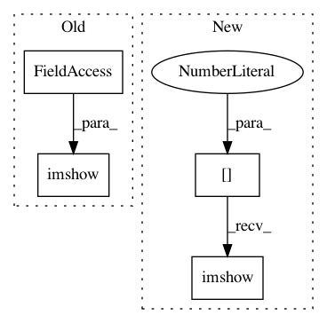

fa36bea1c3fc38cdbc8c35c6b12d07b5c3f07b25,doc/examples/edges/plot_canny.py,,,#,26
Before Change
ax2.axis("off")
ax2.set_title(r"Canny filter, $\sigma=1$", fontsize=20)
ax3.imshow(edges2, cmap=plt.cm.gray)
ax3.axis("off")
ax3.set_title(r"Canny filter, $\sigma=3$", fontsize=20)
fig.tight_layout()
After Change
// display results
fig, ax = plt.subplots(nrows=1, ncols=3, figsize=(8, 3))
ax[0].imshow(image, cmap="gray")
ax[0].set_title("noisy image", fontsize=20)
ax[1].imshow(edges1, cmap="gray")
ax[1].set_title(r"Canny filter, $\sigma=1$", fontsize=20)
In pattern: SUPERPATTERN
Frequency: 3
Non-data size: 4
Instances
Project Name: scikit-image/scikit-image
Commit Name: fa36bea1c3fc38cdbc8c35c6b12d07b5c3f07b25
Time: 2021-03-24
Author: devel@sciunto.org
File Name: doc/examples/edges/plot_canny.py
Class Name:
Method Name:
Project Name: scikit-image/scikit-image
Commit Name: ac3be33ac656db7685ac1d9a329a9060d8c05759
Time: 2017-04-07
Author: devel@sciunto.org
File Name: doc/examples/transform/plot_rescale.py
Class Name:
Method Name:
Project Name: scikit-image/scikit-image
Commit Name: 493c862567da8e61ba3f21883e680de00dd0531e
Time: 2016-09-04
Author: multicolor.mood@gmail.com
File Name: doc/examples/xx_applications/plot_rank_filters.py
Class Name:
Method Name: